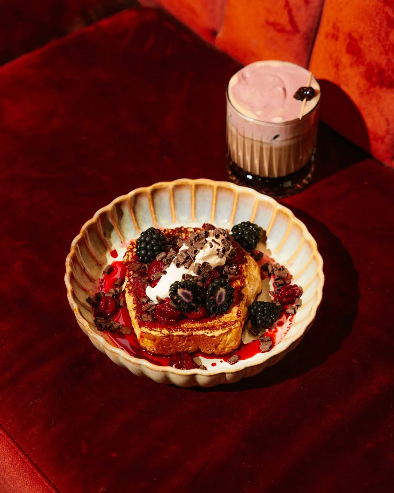
Herfstfavoriet
French toast "Black Forest"
Met vanille, chocolade, slagroom en kersen.
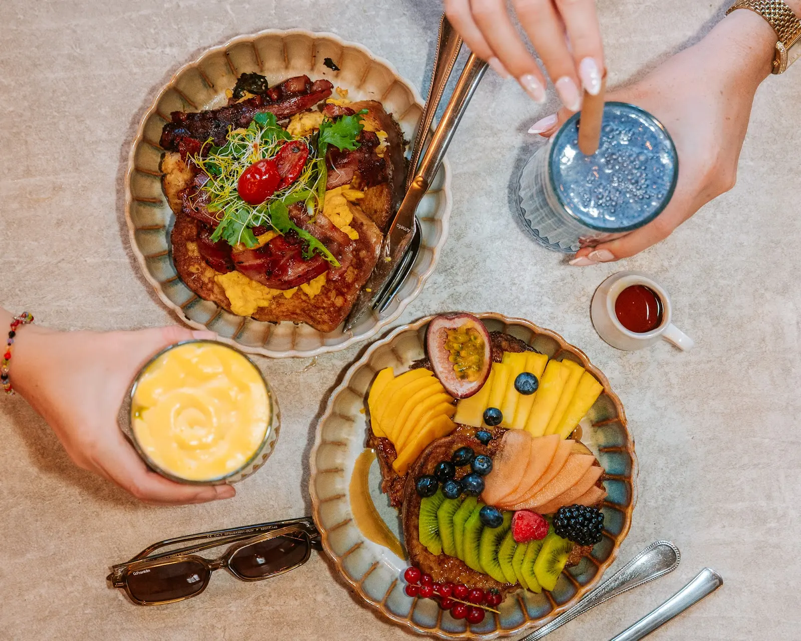
Good coffee, pretty plates & a little main character energy. Op het Hogeschoolplein, van dinsdag tot zondag vanaf 10 uur.
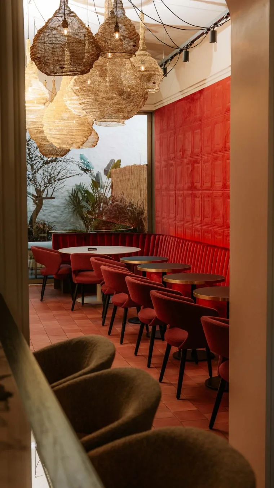
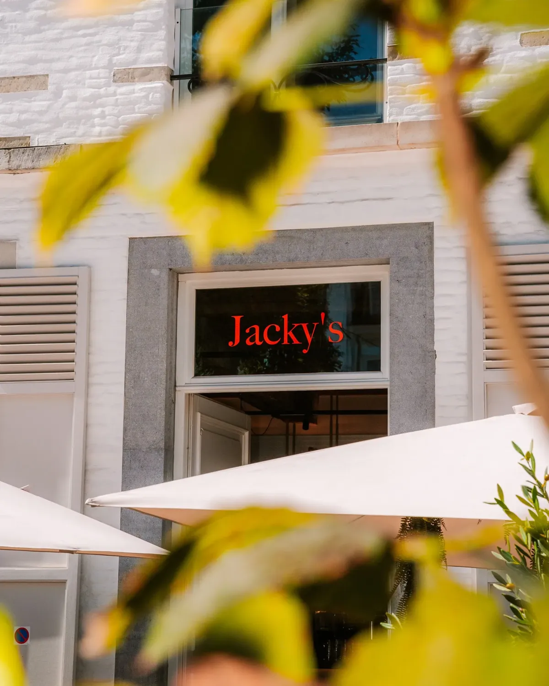
Jacky's opende deze zomer op het Hogeschoolplein. Rode banken, een terras op het plein en borden die eruitzien alsof ze voor een fotoshoot gemaakt zijn. Spoiler: ze smaken nog beter.
Je komt voor een koffie en een babbel, en voor je het weet is het een hele namiddag.
De seizoenskaart verandert mee met het weer. Dit zijn de favorieten van nu.

Met vanille, chocolade, slagroom en kersen.
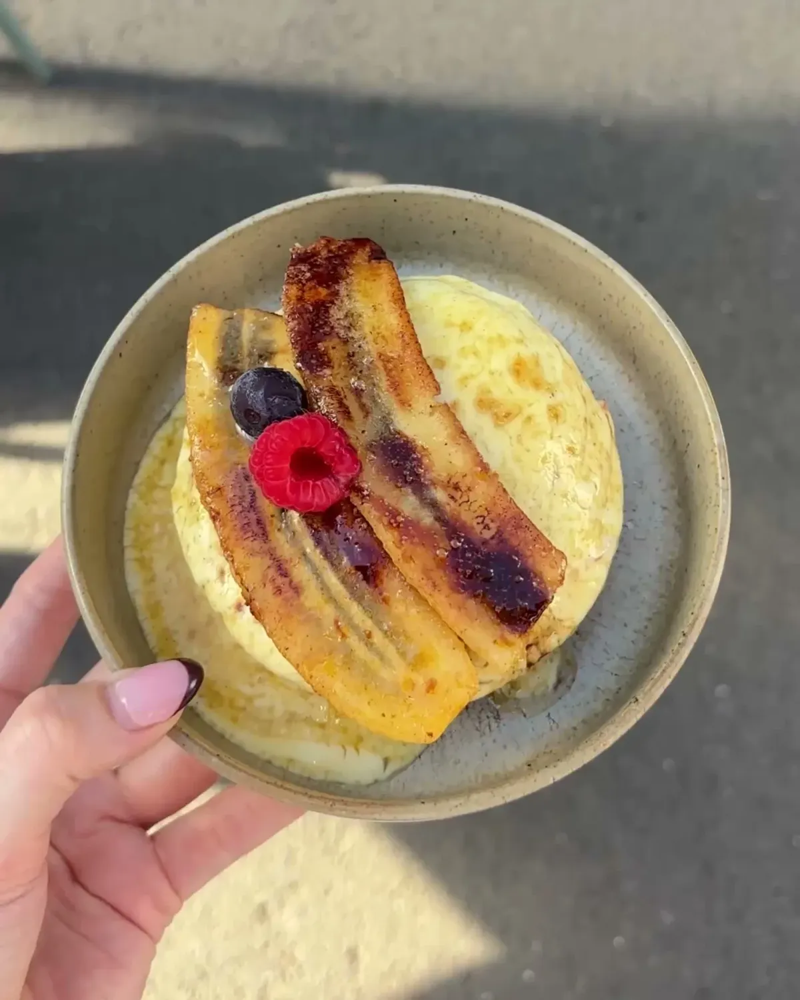
Monday blues? We don't know her.
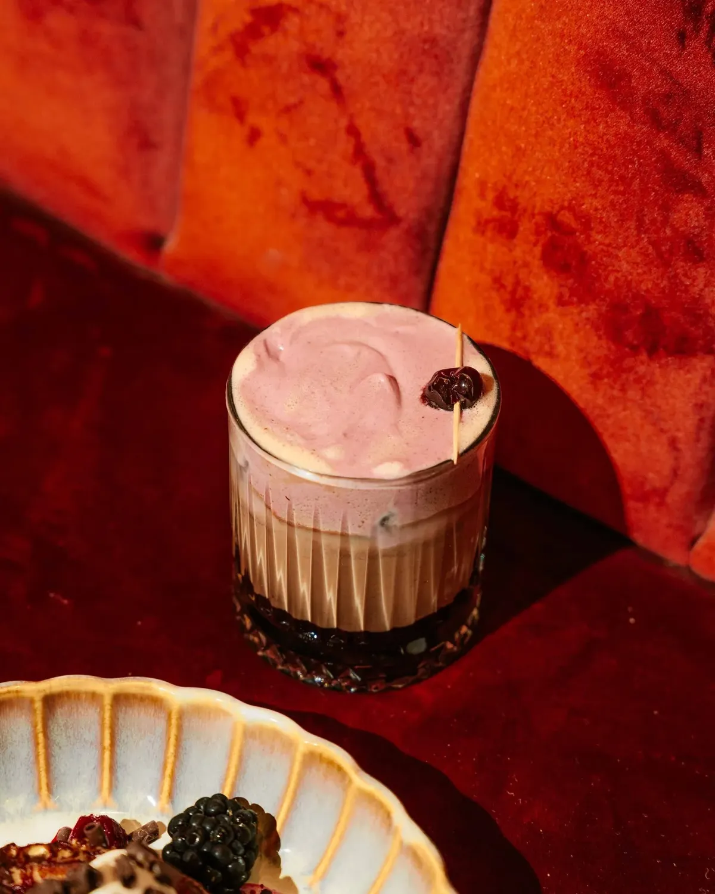
Voor als het buiten grijs is. Dus vaak.
Van een açai bowl tot een brioche vol hollandaise. Bestellen doe je aan tafel, of online om mee te nemen.
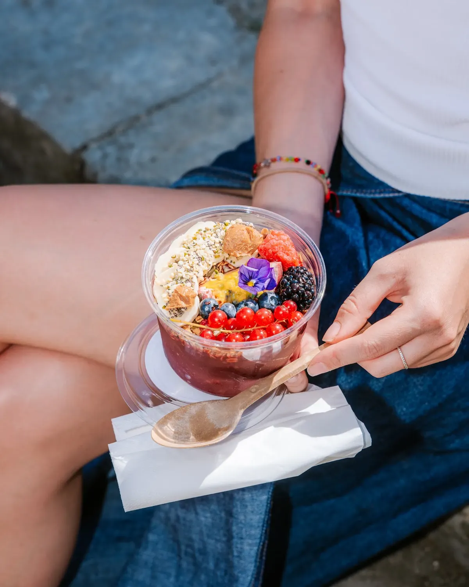
Açai, fruit en granola. Mooi genoeg om eerst een foto te nemen.
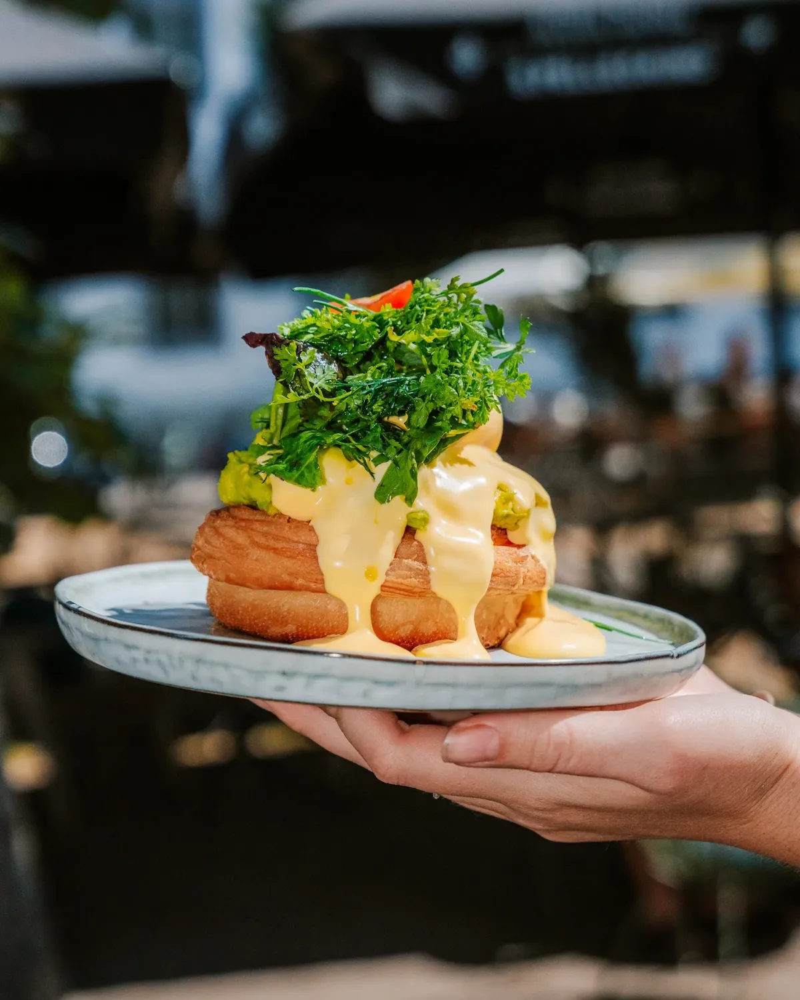
Brioche, eitjes en hollandaise. Het volle werk.
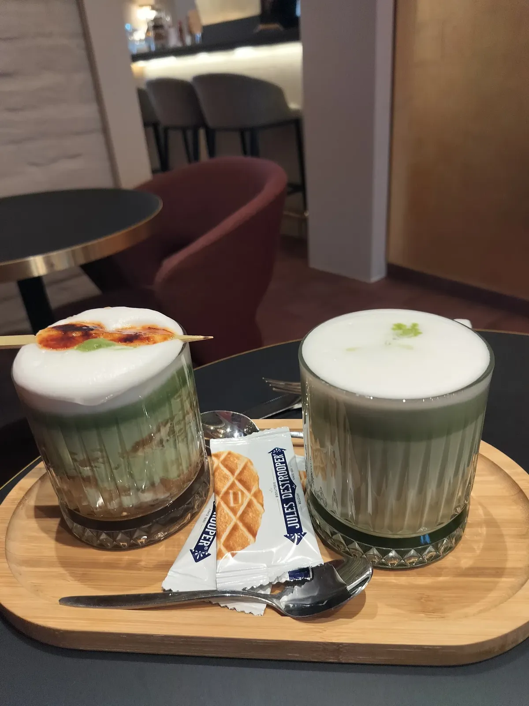
Iced of warm, in laagjes. Met een herfstspecial.
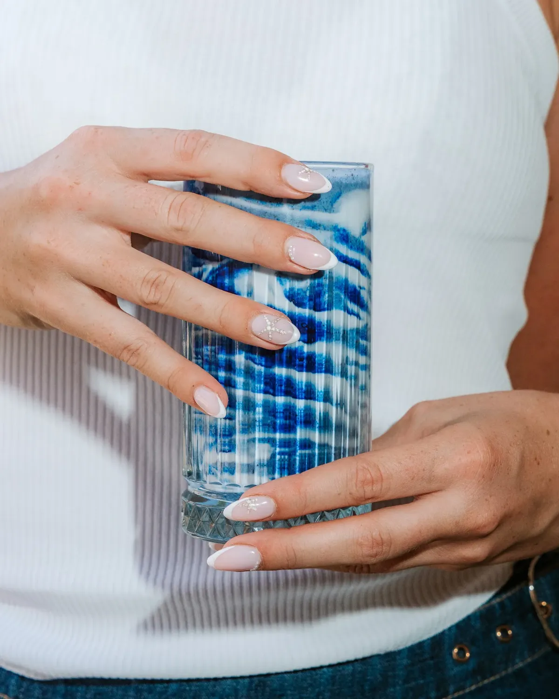
Never skip a good drink. Especially not these ones.
"Superlekker gegeten, veel keuze en elk gerecht ziet eruit als een kunstwerkje! Een top adresje!! 🤎☕️🍓🌞"MMaxime Van den BrandeGoogle review
"Super leuke en hippe zaak! De iced latte was zalig en prachtig gepresenteerd met mooie laagjes. Ook het eten zag er top uit. Zeker een nieuw favoriet lunchadresje! 😊"YYinthe heylenGoogle review
"Enorm leuk interieur, met goede sfeer en gezelligheid. Eten was verrukkelijk en de hoeveelheid is perfect! Vriendelijk personeel."JJannis De KeyserGoogle review
"Was 'n leuke ervaring... Mooie locatie, prachtige zaak, zeer vriendelijke bediening en heerlijke gerechtjes, mooi gepresenteerd...een absolute aanrader"MMaggy Van MeenselGoogle review
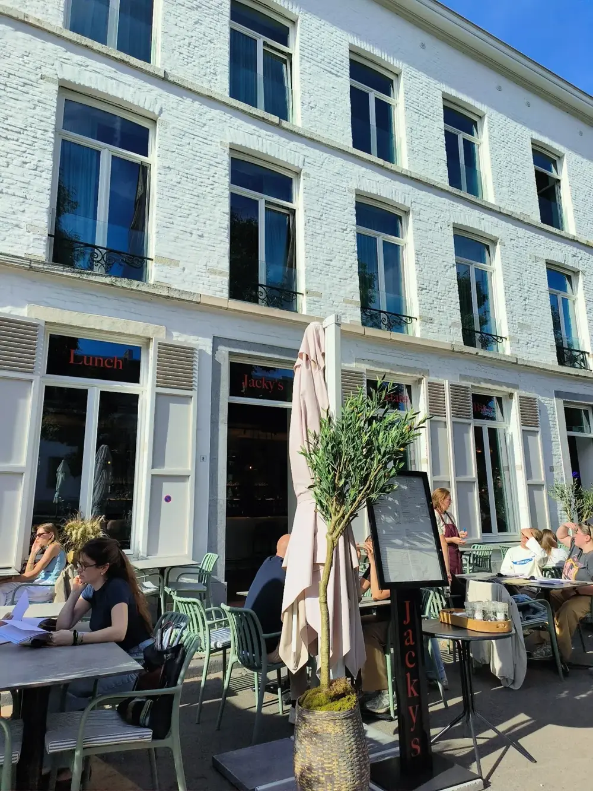
Terras op het HogeschoolpleinOpen van dinsdag tot zondag vanaf 10 uur, op maandag zijn we dicht.
Ik maakte deze demo voor jullie om te tonen wat er kan. Na een kort gesprek maak ik er iets veel persoonlijkers van, helemaal naar jullie wens.
Vrijblijvend. Ik kom langs of we bellen.
Op maat, op jullie eigen domein.
Geen voorschot. Jullie betalen pas als alles klaar is.
Hosting, domeinnaam en kleine wijzigingen, zoals nieuwe openingsuren.
Omdat een voorbeeld meer zegt dan een mail. Zo zien jullie meteen wat er kan, en het kost jullie niets.
Nee. Het gesprek is vrijblijvend. Vinden jullie het niks, dan is het daarmee gedaan.
Na ons gesprek staat jullie site binnen 10 tot 14 dagen online.
Zeker. Jullie domeinnaam kan gewoon blijven, de nieuwe site komt in de plaats van de oude.
Nee, dat doe ik op basis van ons gesprek. Eigen foto's zijn mooi meegenomen, maar niet nodig om te starten.